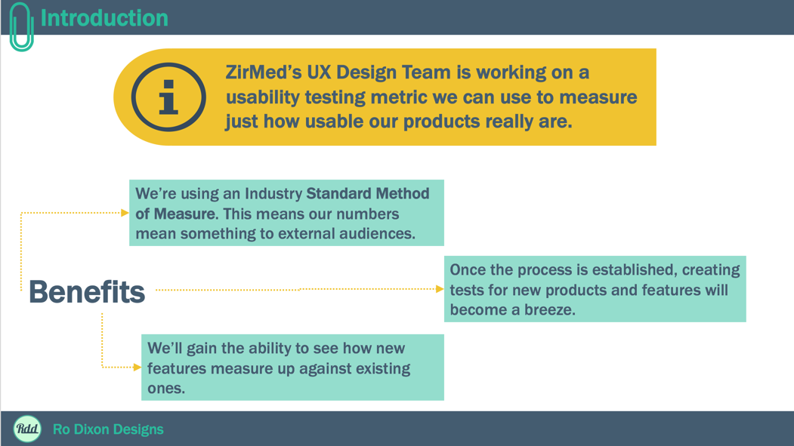
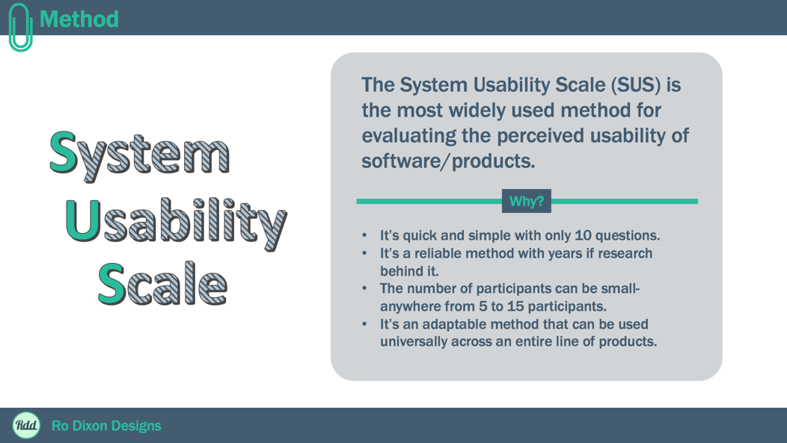
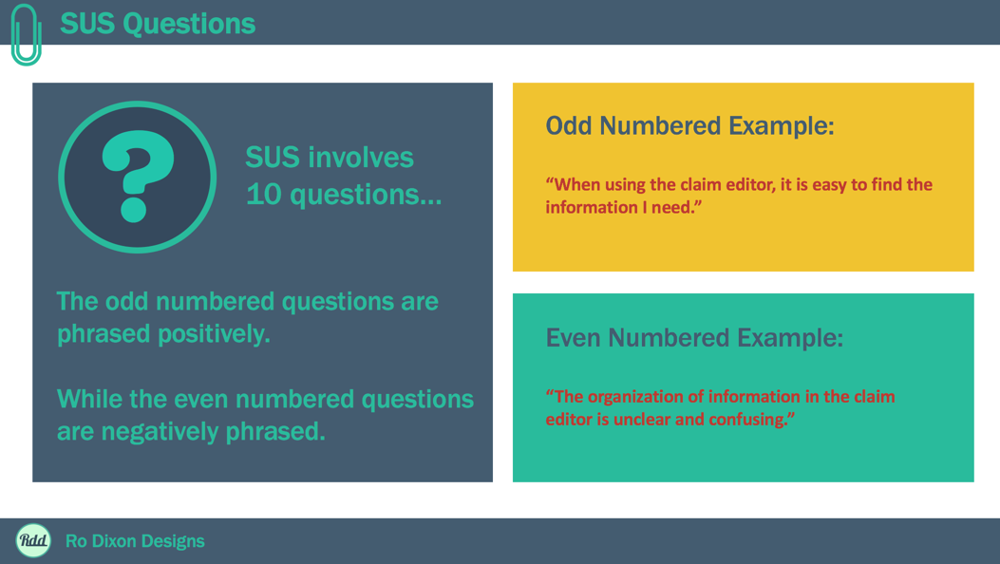
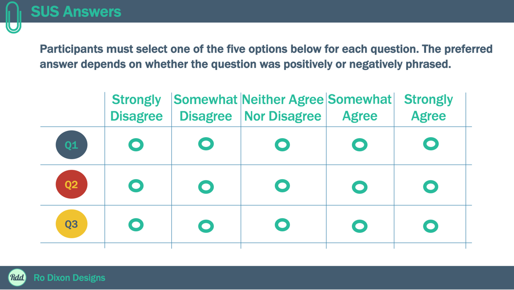
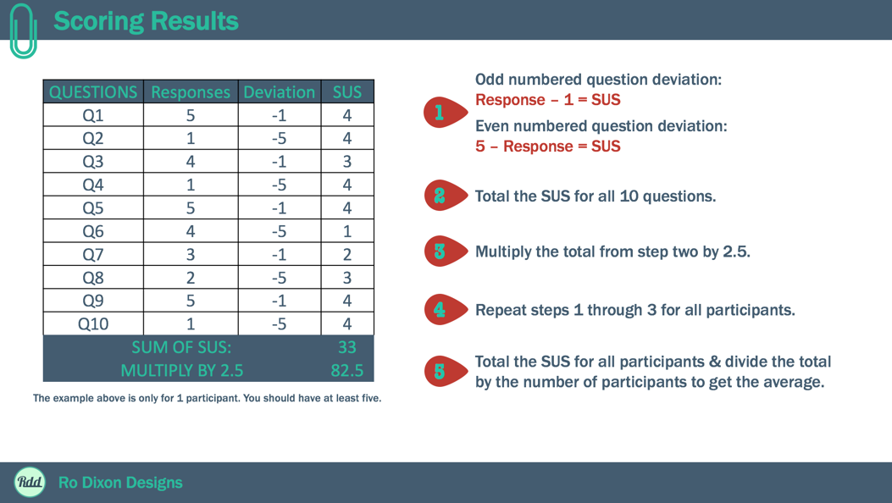
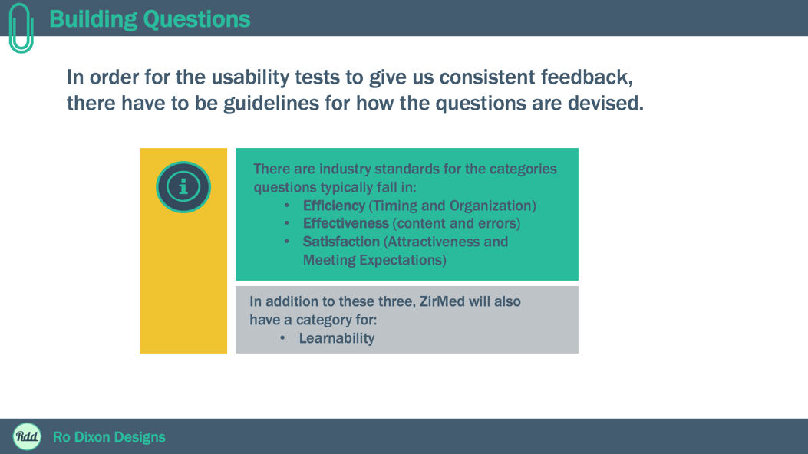
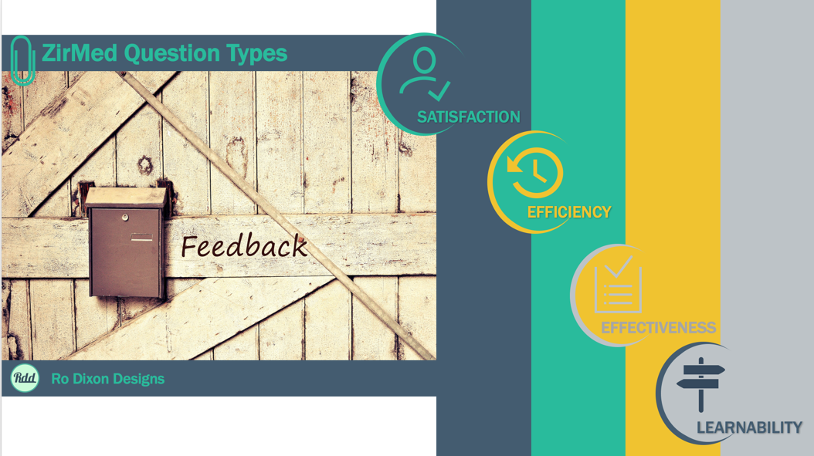
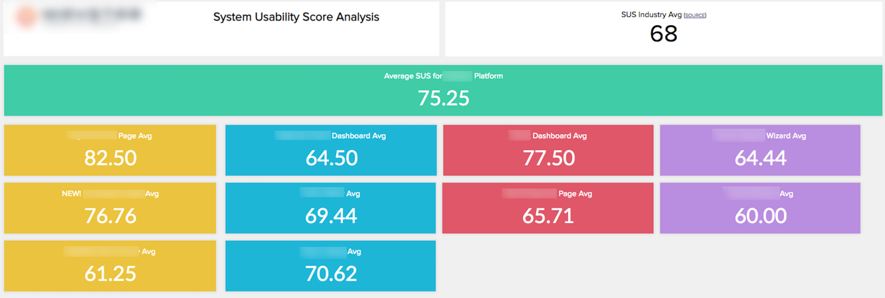

Ro Dixon,
ux Designer
SUS Implementation
Challenge
I was asked by my employer to research differing methods of standardized usability testing. I was put solely in charge of developing a system we could use for our suite of products.
Research
I first dove into the deep pool that is usability metrics, trying to understand the area of study as a whole before I narrowed my search to standardized methods only. Then I did research on my research… I hadn’t studied that hard since college.
I wrote a very detailed blog post on my findings. It’s long, maybe too long, but it needs to be if I’m going to include all the options, their pros/cons and who they’re best suited for.
Blog Post
Team Buy In
Once I had chosen the SUS (System Usability Score) method for our company, I put together a very high level powerpoint presentation on it for our team, hoping to get their buy in to continue my work- which I did.

- 
- 
- 
- 
- 
- 
- 
Implementation
I then formulated a list of usability questions in each of the four categories: Satisfaction, Efficiency, Effectiveness, and Learnability.
I met with our Product Managers to see which products and features would best fit having an SUS created for them, and kept a running list. I knew we wouldn’t be able to get feedback on all of them at once, so I prioritized the list in order of most valuable to least and worked on creating the SUS surveys in that order.
Then it was time launch our first survey. I originally used Google Forms in tandem with our MailChimp user listing. Later our team discovered TypeForm and we’ve been using that platform for our surveys ever since.
Since launching this initiative in 2016, we now have an SUS score on all major products and features. We have also successfully used this method to test redesigns to ensure that our scores increased with the new design, rather than decrease.
Here is an example of a report I generate showing the scores of each product. The colors indicate that feature/product fits under a specific product grouping (names have been removed to protect my employer’s privacy).

Takeaways
I’ve learned a great deal over the years regarding Usability Metrics and Standardized Usability Testing. I believe this experience would make me a great asset on a design team where I can help the company launch initiatives like this one.